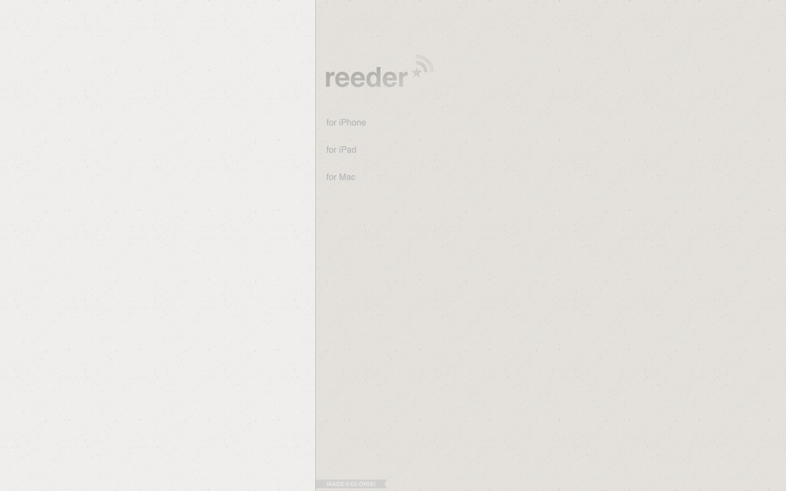

References / Website / 317
Reeder website, 2011
The site for the RSS reader Reeder, archived October 2011: two panes of speckled paper with pale debossed type.
- Source
- reederapp.com (archived copy)
- Made
- 2011
- Style
- Skeuomorphism (agent-proposed, not yet reviewed by a person)
- Moods
- Quiet, papery, calm
- Evidence
- Captured from the Internet Archive with
tools/capture.mjs(headless Chrome, 1440 × 900) on 28 September 2026 and inspected. The archived page may lack some images or scripts that the live page had. - Reviewed
- Rights
- Third-party work, stored with credit for commentary. License: unverified. Rights policy
Observed
- The whole viewport is pale warm-gray paper with small specks, split into two panes by a thin dark line.
- The logo “reeder” with a star and feed waves is a slightly darker gray, pressed into the paper with a light lower edge.
- Three links (for iPhone, for iPad, for Mac) are pale gray text on the paper.
- A small gray ribbon at the bottom reads “MADE@GLORIA!”.
Why it belongs
It passes the shadow and radius metrics but fails the pattern and gradient metrics: the paper is one bitmap image, measured as 100% image share.
Borrow
Use a speckled paper texture and a debossed logo alone for a very quiet version of the style.
Measured
Machine-extracted by tools/extract-traits.js on . Full measurement.
- Type families
- bold Helvetica (100%)
- Median radius
- 0 px
- Mean chroma
- 0
- Palette
- #bbbbbb 100%

